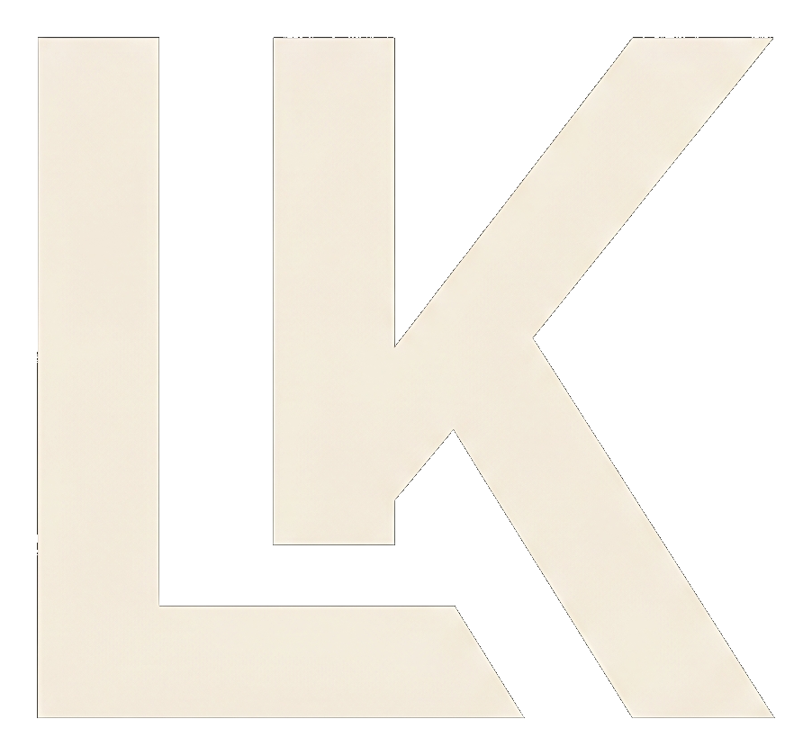
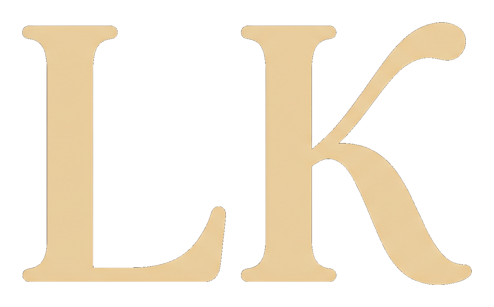
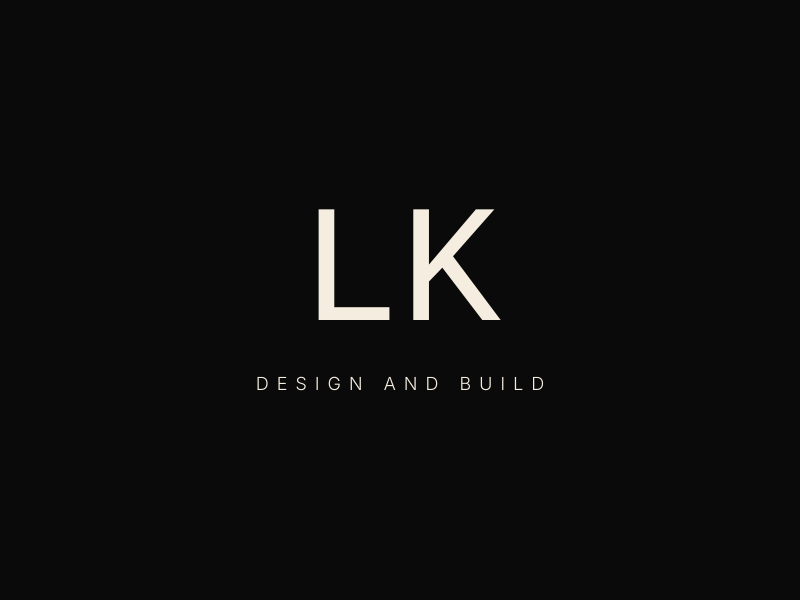
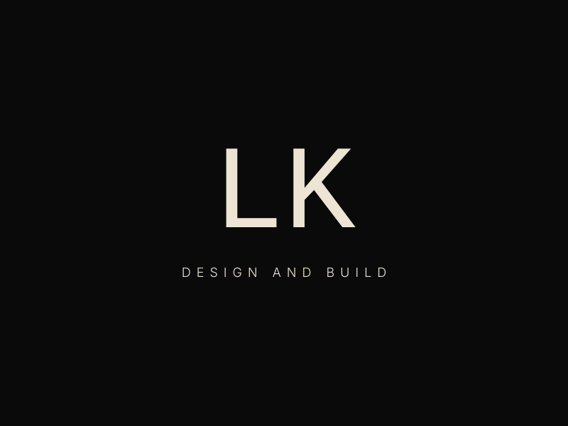
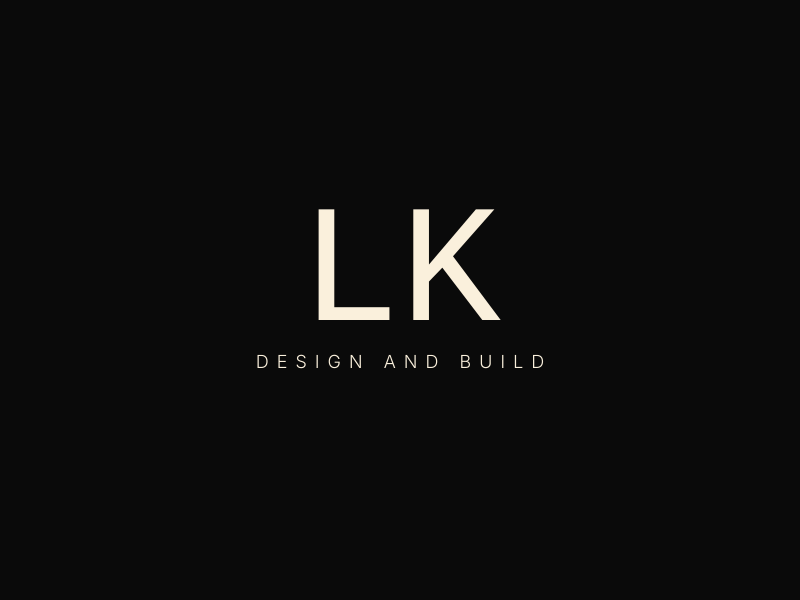

LK Design & Build
Clean type on black. No grid, no box, no dimension lines. Warm off-white with a refined sans-serif tagline pulled tighter beneath the mark.
Layout Variations (A–F)
▼A — Clean, Left-Aligned
Slab serif monospace with Inter Light tagline at 0.45em spacing. Warm off-white #F0EAE0 on near-black. Direct and balanced.
B — Separator, Left-Aligned
Subtle horizontal separator between LK and tagline. Tagline smaller (16px) with wider 0.55em spacing and reduced opacity. Warmer #EDE6D8.
C — Ultra Light, Left-Aligned
Extra Light weight (200) on both LK and tagline. Larger 180px letters on true black. Most minimal and premium feeling.
D — Accent Line, Centred
Centred layout with a subtle accent underline beneath LK. Adds a touch of architectural detail without a full grid. Warmer #E8E0D0.
E — Understated, Centred
Tagline at 15px with 0.6em spacing and 65% opacity — very quiet. Lightest warm white #FAF6F0 for maximum contrast on deep black.
F — Regular Weight, Centred
Inter Regular (400) tagline at 60% opacity for a slightly bolder sub-line. Same warm off-white #F0EAE0. Clean and grounded.
Compared to Original
Logo Options
Ten directions for the LK mark. Options 1, 3–6, 8 are the earlier type-based and mark studies. Options 2, 7, 9, 10 are new soft/rounded directions in champagne (#F2E6D0), with tagline layered beneath in HTML (left-aligned to the logo, letter-spaced to match its width).
Option 1 — Current
The logo as it has been presented. Slab serif with visible upticks on the L foot and K arms. This is the baseline.

Option 2 — Humanist Rounded
Soft humanist rounded sans — fully rounded terminals, gentle curves on K's joins. Friendly, approachable, warm. Champagne #F2E6D0.
Option 3 — Custom Slab Serif
Custom-drawn letterforms with refined slab serifs. Bolder strokes, tighter proportions. Same uptick character, more architectural feel.
Option 4 — Archivo 500
Squared grotesque — no uptick, no serifs. More angular and architectural. Bold presence with clean L.

Option 5 — AI Custom Slab (Refined)
AI-rendered custom bolder slab serif. Tighter proportions, cleaner inside corner, more architectural feel.

Option 6 — Display Serif
LK wordmark in a modern display serif with the DESIGN AND BUILD tagline layered beneath, letter-spaced to match logo width.

Option 7 — Rounded Serif
Soft rounded serif — bracketed serifs with rounded tips, gentle organic curves. Warm and editorial. Champagne #F2E6D0.

Option 8 — Interlocking Monogram
Custom LK monogram with merged vertical stroke, DESIGN AND BUILD tagline spaced across the monogram width.

Option 9 — Rounded Geometric
Soft rounded geometric sans — circular terminals, monoline weight, rounded joins on K. Modern and friendly. Champagne #F2E6D0.

Option 10 — Elegant Soft Contrast
Flowing soft-contrast letterforms — subtle thick-to-thin on stems with softly rounded terminals. Elegant and warm. Champagne #F2E6D0.
Off-White Colour Variations
▼Same logo form, different off-white tones — from warm cream through to cool stone.

Warm Cream
#F5EDE0 — Yellowish warmth. Inviting, residential feel.

Parchment
#EDE4D4 — Deeper warmth, almost tan. Earthy and grounded.
Sand
#E8DFD0 — Warm neutral. Balanced between cream and stone.
Blush
#F0E6E2 — Pink undertone. Softer, slightly feminine warmth.
Stone
#E6E2DC — Cool neutral. Architectural, muted, modern.
Linen
#F8F4EE — Lightest and brightest. Near-white with subtle warmth.
Bone
#DDD6C8 — Deepest tone. Vintage, tactile, like aged paper.
Oyster
#ECE6DE — Middle ground. The original warmth, slightly desaturated.

Rich Cream
#FAF0DC — Noticeably warm and creamy. Buttery golden tone.
Buttercream
#F5E8CC — Deepest cream. Warm, yellow-gold undertone. Confident warmth.
Preview on Site
Switch between logo versions, then open in either prototype